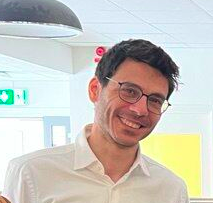

EQUR-XSM
Project leadEvidential uncertainty and the reliability of saliency explanations in medical imaging.
Associate Professor · Maître de conférences
I develop and evaluate machine learning methods for medical image analysis, with a focus on uncertainty, explainable AI, and learning with limited annotations.
PICSA team · Data Science Department · GIPSA-Lab
Core member of PHAIMS · MIAI Cluster IA

Evidential uncertainty and the reliability of saliency explanations in medical imaging.
Multimodal AI for spine surgery planning, combining preoperative imaging, clinical notes and posture measurements.
Sensitivity, fragility and explainability of medical imaging AI, in collaboration with UiT and Bio AI Lab.
Coordination of industry links and internships, alongside course responsibilities in computer vision and AI.
Teaching responsibilitiesPhysics-aware AI for imaging science, from space to atoms. The project combines AI with physical models for imaging applications in remote sensing, biomedical imaging and materials science.
About PHAIMSAward for our co-authored work on domain-specific semantic similarity assessment of chest X-ray reports.
Award-winning publicationPosition paper accepted: “Localization Gains from Explanation Regularization Should Not Be Interpreted as Faithfulness Gains”, at the 3rd International Conference on Explainable AI for Neural and Symbolic Methods.
Sub-coordinator of the Artificial Intelligence track at Unite! Research School 2026, Santuario di Oropa, Italy.
Keynote and hands-on training at the ERA4Health workshop on implementing AI tools in biomedical research and healthcare.
“Knee Injury Risk Estimation Using Deep Learning and Large Language Models (LLMs)” accepted at the 48th IEEE EMBS annual international conference.